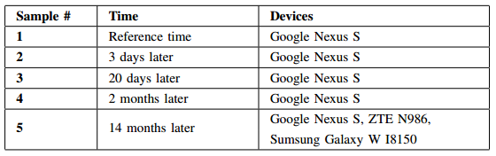

WiFi-based Indoor Localization Data with Densely Deployed APs
|
- Introduction Many indoor positioning algorithms have been proposed in the last decade, most of which are based on WiFi RSS fingerprints. However, the environment has changed dramatically since the original algorithms using only a few Access Points (APs). A typical building with densely deployed APs might contain hundreds of APs. The explosive growth of the number of APs introduces new challenges to these WiFi-based localization algorithms. This project aims to explore how the AP-intensive environment influences localization accuracy. It presents an empirical study of WiFi fingerprint-based indoor localization algorithms in a real-world environment with hundreds of APs. - Publication and Data
- Experiment Environment

- Data Characteristics
Last modified: 2015-04-01 |